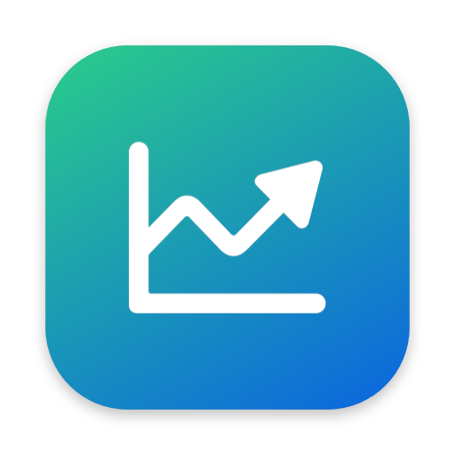

Программа собирает цены конкурентов на технику Samsung в вашу Excel-таблицу мониторинга и подсвечивает красным там, где конкурент дешевле НОСИМО.
| Mac | Откройте «Мониторинг цен.dmg» и перетащите приложение в «Программы». При первом запуске — правый щелчок → «Открыть». |
|---|---|
| Windows | Запустите «Мониторинг цен — установка.exe» и следуйте шагам. Программа появится в меню «Пуск» и на рабочем столе. |
| Нужно | Google Chrome — без него Ozon и Wildberries не показывают цены. Интернет. |
| Таблица | Ваша Excel-таблица мониторинга. Выбрать… (откроется папка «Таблицы») или просто перетащите файл в окно; файл из другого места копируется в «Таблицы». Рядом появится тип: ТВ или Смартфоны. Если написано «формат не распознан» — это не таблица мониторинга или у неё изменились заголовки. |
|---|---|
| Магазины | Галочки: по каким магазинам собирать цены. Все / Снять все. Колонки неотмеченных магазинов не меняются. Выбор запоминается отдельно для ТВ и для смартфонов. |
| Основная папка | Где хранится весь мониторинг: файлы ссылок и папки по датам (см. раздел 4). Программа спрашивает её при первом запуске, дальше всё складывается туда автоматически. Изменить… — выбрать другую. |
| Ссылки | Файл со ссылками на товары М.Видео, DNS, МТС, samsungstore выбирается сам по типу таблицы: links_tv.xlsx или links_smart.xlsx в папке «Ссылки». Открыть — открыть его в Excel. Заполнить автоматически — подобрать ссылки самостоятельно (см. раздел 6). |
| Кнопки вверху | Цены НОСИМО — обновить вашу цену с galaxystore.ru. Запустить — собрать цены конкурентов; во время работы кнопка становится Остановить. |
Таблица, магазины и основная папка запоминаются — в следующий раз достаточно нажать «Запустить».
Сколько длится: таблица ТВ по всем магазинам — около получаса, дольше всех — Ozon.
Основная папка/
├── Таблицы/ ← ваши таблицы мониторинга (ТВ, смартфоны)
│ └── Резервные копии таблиц/
├── Ссылки/ ← рабочие файлы ссылок: правьте их здесь
│ ├── links_tv.xlsx
│ ├── links_smart.xlsx
│ └── Резервные копии ссылок/
└── 2026-10-22/ ← папка дня
├── ТВ/
│ └── Мониторинг ТВ и акустики 2025.xlsx ← таблица с новыми ценами
├── Смартфоны/
│ └── Мониторинг_смартфоны_планшеты….xlsx
├── Ссылки/ ← копия: по каким ссылкам собраны цены этого дня
├── Скриншоты/
│ ├── ТВ.png ← снимки готовых таблиц
│ └── Смартфоны.png
└── Логи/
└── Лог 2026-10-22 11-57-57.csv ← что, где и почему найдено
links.xlsx, links_smart.xlsx) переносятся в «Ссылки» автоматически.| Магазин | Правило |
|---|---|
| М.Видео, DNS, МТС, samsungstore | По ссылке из файла ссылок. Программа проверяет, что ссылка ведёт на нужный товар: для ТВ — по артикулу, для смартфонов — по модели и памяти из колонки «Наименование». |
| Ozon | Поиск по артикулу, первые 15 карточек выдачи: самая низкая цена с Ozon-картой среди товаров с отзывами; если отзывов нет ни у одного — самая низкая. Уценка и зарубежные товары (с таможенным платежом) не учитываются. |
| Wildberries | Поиск по артикулу, первые 15 карточек: самая низкая цена среди товаров с отзывами; если отзывов нет — самая низкая. |
| НОСИМО (galaxystore.ru) | Кнопка «Цены НОСИМО»: цена с сайта, даже если товара нет в наличии; если товара нет на сайте — «-». |
…FUXRU, а не …FUXCE).Для М.Видео, DNS, МТС и samsungstore цена берётся со страницы товара, поэтому нужен файл ссылок: строка — артикул, колонка — магазин. Если товара в магазине нет, в ячейку ставится «-».
Заполнить автоматически подбирает ссылки заново:
| Таблица | Магазины и правило |
|---|---|
| ТВ | М.Видео — самая дешёвая карточка в наличии (любой продавец). DNS — карточка с этим артикулом. |
| Смартфоны | М.Видео, DNS, МТС, samsungstore. Артикулы в таблице внутренние, поэтому товар ищется по модели, памяти, связи (LTE / Wi-Fi) и размеру часов из колонки «Наименование» — S26, S26+, S26 Ultra и S26 FE не путаются. Среди цветов берётся самая дешёвая карточка в наличии; на М.Видео — сначала карточка самого М.Видео, а если её нет — самый дешёвый продавец маркетплейса без зарубежных версий (М.Видео помечает их сам, даже если в названии нет «Global»; только зарубежные — «-»). Если в строке указан цвет («… blue»), берётся только этот цвет. Ссылки М.Видео обновляются автоматически перед каждым запуском мониторинга смартфонов (строка «М.Видео: обновление ссылок», несколько минут) — предложения продавцов меняются каждый день. |
Цены привязаны к артикулу, а не к номеру строки: строки можно переставлять и удалять. Колонки программа находит по заголовкам («Мвидео», «ДНС», «МТС», «Nbcom», «НОСИМО», «OZON», «Wildberries»), поэтому их можно переставлять и вставлять пустые колонки — главное не переименовывать заголовки.
Подождите — обычно страница пропускает сама за минуту. Если нет — пройдите проверку в этом окне вручную, программа продолжит.
В файле ссылок нет ссылок для этой таблицы, а Ozon/Wildberries не отмечены. Заполните ссылки или отметьте магазины.
Выбран не тот файл или в таблице изменились заголовки первой строки.
Ссылка в файле ссылок указывает на другую модель или память. Исправьте её или нажмите «Заполнить автоматически».
Сайт временно недоступен или сменил вёрстку. Запустите позже только этот магазин (оставьте одну галочку) — результат допишется в файл дня. Если ошибки повторяются — сообщите разработчику, приложив лог.
Закройте таблицу и файл ссылок в Excel перед запуском — открытый в Excel файл Windows не даёт перезаписать.
Да. Не закрывайте окно Chrome, которое открыла программа, и не запускайте второй прогон одновременно.